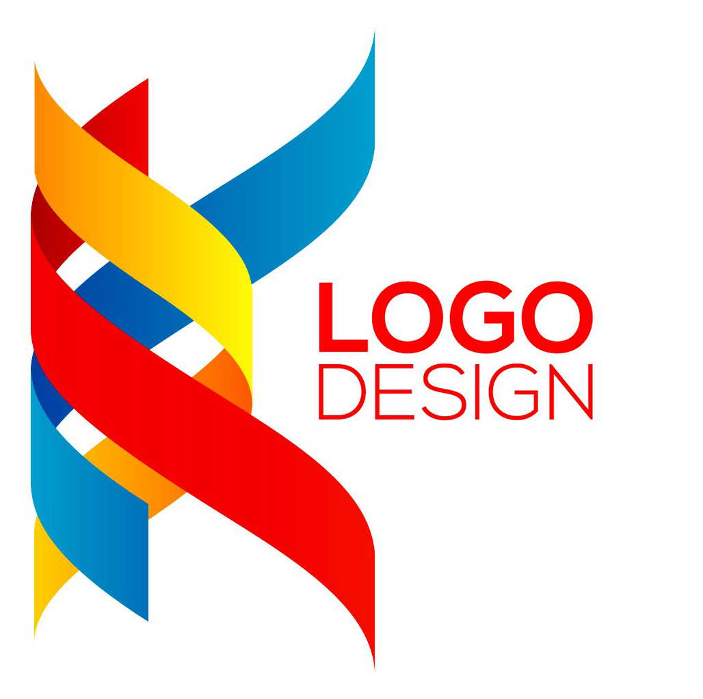

Khadija Syed Email:Khadija.syed99@yahoo.com
Mobile: +92 322 704 1481 |
 |
|
Objectives:
|
|
I am looking for a highly challenging and dynamic work environment in which I will be able to enhance my professional skills and would be able to get valuable work experience.
|
Personal Skills:
| |
|
• Determined individual.
• Ability to work in a team.
• Broader vision to understand & manage things.
• Capacity to learn fast and execute well.
• Leadership ability.
• Excellent communication skills.
|
|
Computer Skills:
| |
|
Microsoft Word, Paint, Microsoft Windows, Internet, Web browsing and Web searching.
|
|
Languages:
| |
|
English, Urdu, Punjabi
|
|
Education:
| |
M. Phil Education
M. Ed
B. Ed
Certified Beautician
Bachelor
DOM
HSSC
SSC
|
Virtual University.
Education University Lahore.
AIOU Islamabad.
TEVTA Lahore.
AIOU Islamabad.
Johar Computer College Sahiwal.
AIOU Islamabad.
B.I.S.E Multan.
|
|